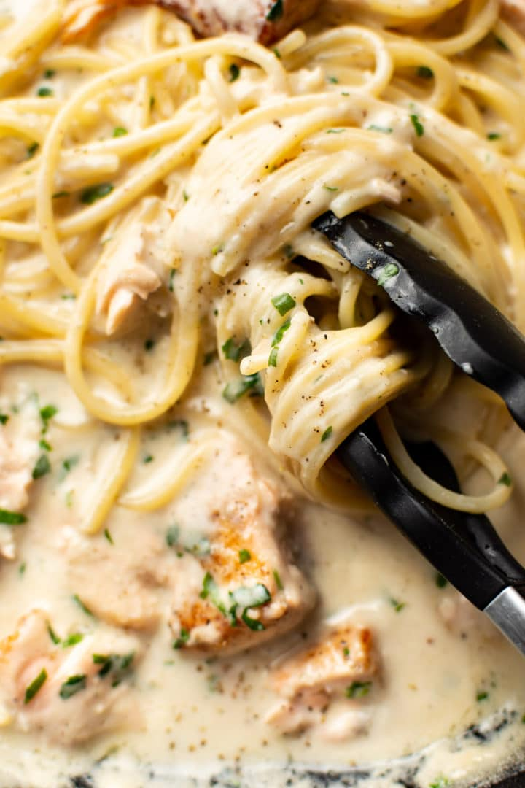

Salmon Pasta

Description
This is a favorite of mine. My wife makes the it the best.
This recipe is a mixture of spagetti cheese and of course the best part some salmon.
In this meal you will taste a salty but creamy cheese covered salmon that will just melt in your mouth. whats that? you want to make this for yourself?
today is your lucky day because I am making this website with the Odin Project course and its making me tell you.
Ingredients
- Salmon
- cream
- parmesan
- Pasta
- Garlic
- Flour
- White wine
- olive oil and butter
- parsley
- onion powder
- lemon
- Boil a large salted pot of water for your pasta and cook it al dente according to package directions.
- Meanwhile, season the salmon with the onion powder and some salt & pepper.
- Add the olive oil and butter to a skillet over medium-high heat. Once it's hot, cook the salmon for a couple of minutes on each side.
- Transfer the salmon to a plate and set aside.
- Reduce the heat to medium. Add the flour to the skillet and cook for about 30 seconds, stirring nearly constantly.
- Whisk in the garlic and wine (let it bubble for 20 seconds or so), followed by the cream and lemon juice.
- Once the sauce is smooth, whisk in the parmesan.
- Add the salmon back in the pan and break it up with your spoon so it's in bite-size pieces. Gently mix it in with the sauce. Cook for an additional 3-5 minutes or so until the sauce is thickened and salmon is cooked through.
- Drain the pasta and add it to the skillet, along with about 1 tablespoon of the water you cooked the pasta in (or more if you want to thin the sauce) as well as the parsley. Gently toss the sauce and pasta. Serve immediately with extra parmesan cheese if desired.